we
Chinese | English
WE 3D 渲染引擎 webGPU engine 3D
WE3D包括基础引擎和编辑器两大部分。（目前WE3D处于初期开发阶段，功能、模块与结构会频繁调整。）
- 基础引擎部分包括：核心功能、图形学功能、模型功能、物理引擎整合、动画管理五个模块。本项目：https://github.com/WebgpuEngine/WE3D
- 编辑器部分包括：材质编辑器、动画编辑器、场景编辑器，构建管理器四个模块，以实现可视化工作。（在https://github.com/WebgpuEngine/editor 部分，todo）
- 演示Demo todo https://github.com/WebgpuEngine/WE3D_Demo
- 文档 todo https://github.com/WebgpuEngine/WE3D_DOC
- WE3D后期还会有后端服务，以实现支持服务器端活链接、USD、Nerf工作流、三维重构等以及和期望实现的图形学大模型AI工作流等。
引擎基础说明
- WE 3D是使用typescript 和webGPU API 开发的web 端三维渲染引擎
- 在引擎基础部分涵盖场景、实体、纹理、材质、摄像机、光源、阴影、后处理、ECS、GPU拾取、AA、颜色空间、tonemapping、延迟渲染、BVH等；
- 在图形学的功能包括：IBL、SSGI、SSR、SSAO等
- 在物理引擎 上使用rapier进行物理引擎工作；
- 在模型部分：涉及gltf、obj、fbx等模型；
- 动画管理部分涵盖:关键帧、骨骼动画、变形目标、粒子系统等；
- 在渲染引擎的架构上是从底层独立设计与实现的，参考了Babylon、three、cesium、UE等；
- 在底层机制以command集合（Draw Command、Compute Command、Copy Command）进行shader提交；
- 在更新机制与事件机制上，以ECS为核心机制以及Event处理；
更多功能说明
- 支持sRGB和display P3的颜色空间，WE3D内部以linear的线性空间进行工作，支持多种模式的色彩映射输出；
- 光源支持环境光、方向光、点光源、聚光灯、面积光；
- 阴影实现以shadow map基础，支持PCSS;
- 在深度上支持正向Z和reveredZ，默认开启reversedZ;
- 支持MSAA，FXAA，并预计实现TAA。目前MSAA与延迟渲染不能同时使用（后期可能改进边缘检测后，支持同时使用）；
- 渲染模式支持前向渲染和延迟渲，透明物体渲染支持alpha透明和物理透明；
- 在渲染的GBuffer使用了多通道（单点56bit），数据覆盖color、depth、position、normal、albedo、roughness、metallic、ao、emissive、material、id等；
- 实体上支持mesh、lines、points，sprite，并支持实例化，在数据属性多种形式的属性组合的数组形式和ArrayBuffer形式数据；
- 在模型上支持gltf、obj、fbx等（进行中）。同时支持仿真数据、体渲染数据，并预计支持地理空间数据(todo);
- 材质支持简单材质、blinn-phong、PBR 材质；
- 摄像机支持正交与透视，且支持viewpot模式，多摄像机，多视图等；
- 拾取(pickup)支持两种模式，GPU端和CPU端，默认使用GPU端的拾取功能，CPU的ray功能配合BVH和物理引擎实现；
- 物理引擎整合rapier为主（进行中）；
- 渲染管理器内部支持多通道，涉及：计算、纹理、材质、渲染目标、不透明阴影、透明阴影、深度、MSAA、前向渲染、延迟渲染、透明渲染、sprite、sprite透明、toneMapping、后处理、ui、stage等诸多通道。各个通道会包括有内容线和时间线两种工作模式；
- 后处理是在有管理器和后处理功能组成，目前有FXAA，blue，colordemo等；
- stage有四个：默认的world，ui、stage1(导航等)，stage2（地图等）；
- ECS应用的比较多，比如实体、材质、光影、摄像机、输入管理、动画、纹理等都是采用的ECS的概念进行管理；
- 动画系统包括：关键帧(keyFrame)、变形目标(mophTarget)、骨骼动画、以及通过物理引擎实现的物理驱动动画；
- 体渲染材质有两个落地方案，一个是三维纹理的方案（3D采样），另一个是ray march的shader方案（实时计算）；
- 大气层方案，有实时积分方案，Bruneton方案，Hillaire方案；
- 在大气层上叠加的还有体积云，丁达尔光效，云阴影等；
- todo：粒子系统、SSGI、SSR、SSAO、TAA、
简单示例
| ReversedZ |
material alpha blend |
pixel level alpha transparent material |
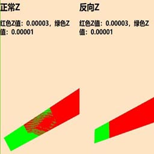 |
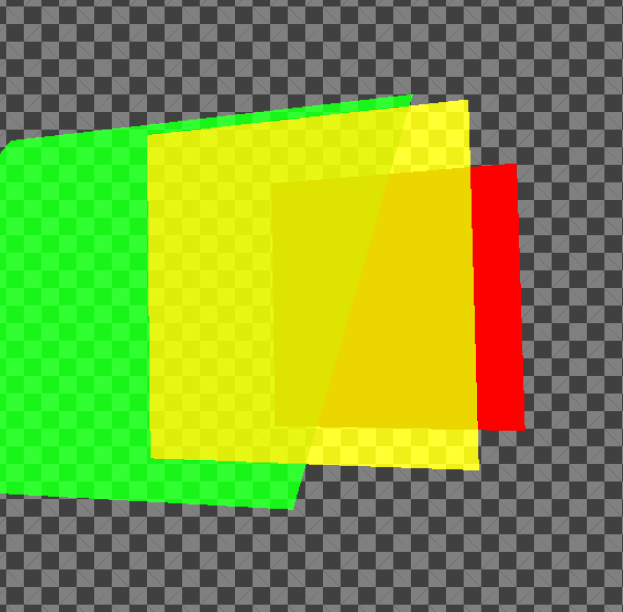 |
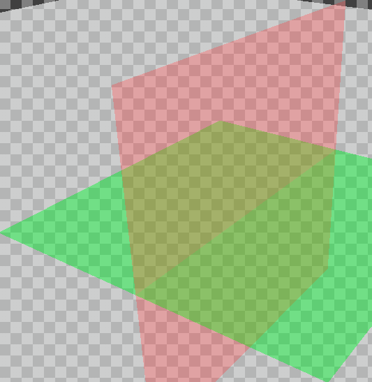 |
| 高光纹理 specular texture |
视差纹理 parallax texture |
法线纹理 normal texture |
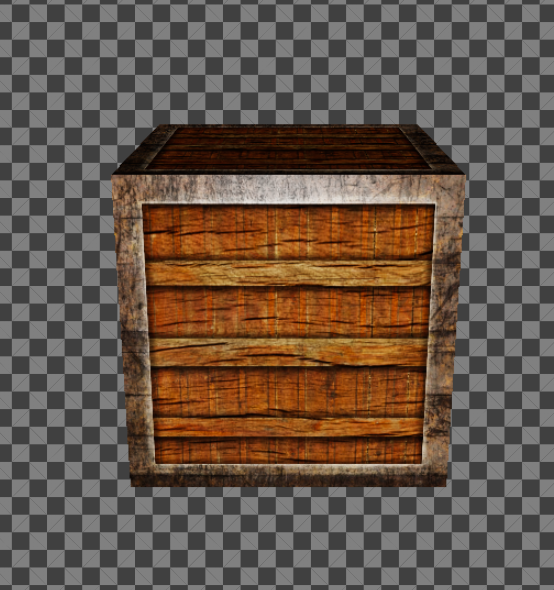 |
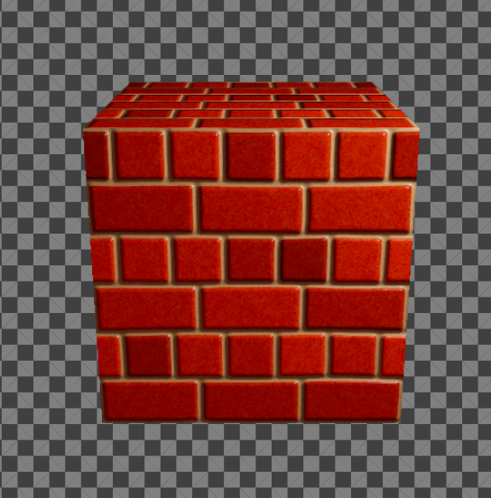 |
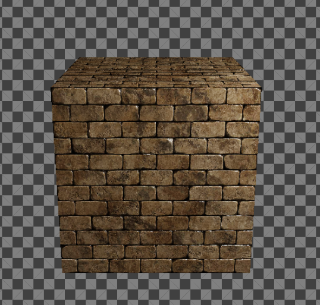 |
| direction light +PCSS shadow |
point light+PCSS shadow |
spot light +PCSS shadow |
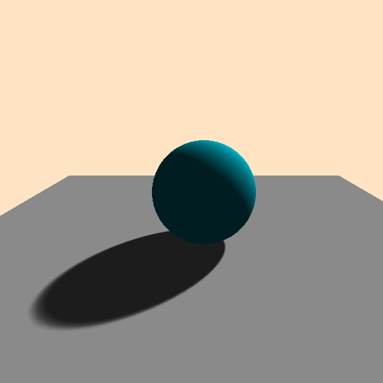 |
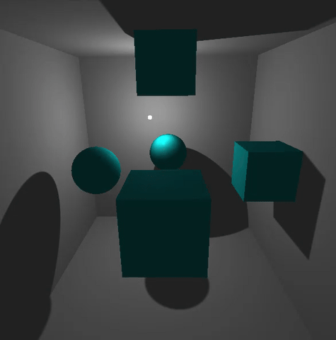 |
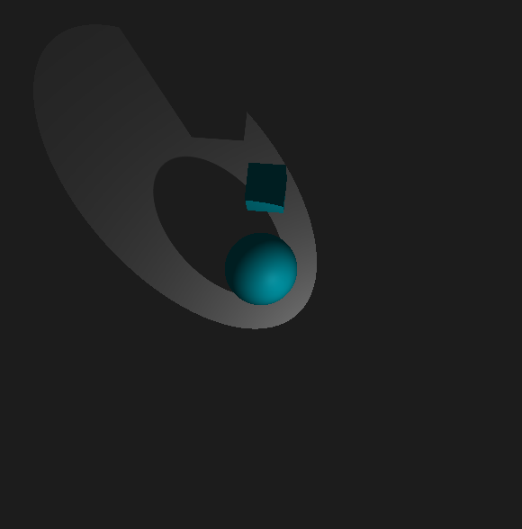 |
| 点光源+视差纹理 |
viewpot |
PBR |
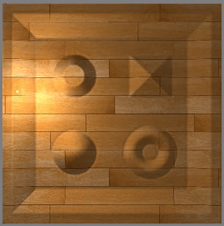 |
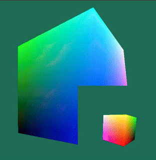 |
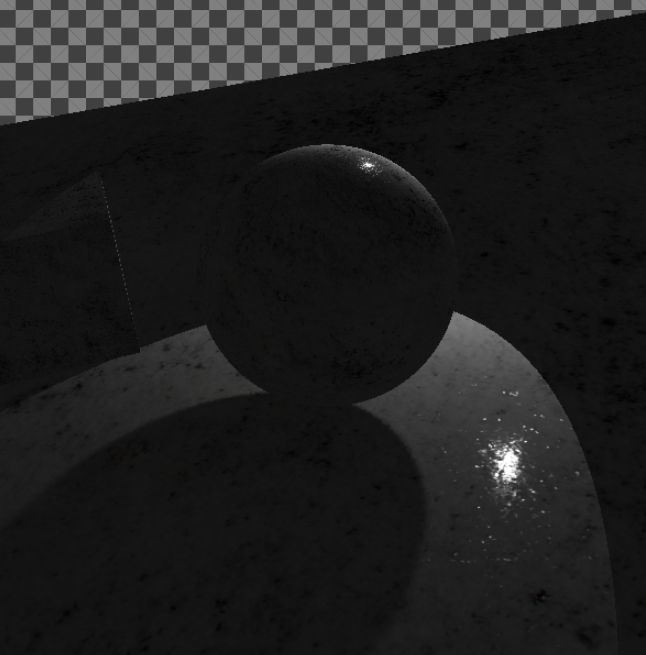 |
| PBR |
PBR+spot+shadow |
PBR+point light+shadow |
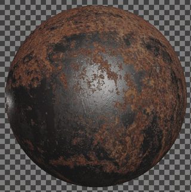 |
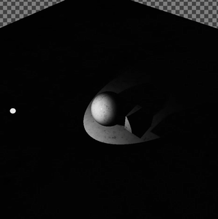 |
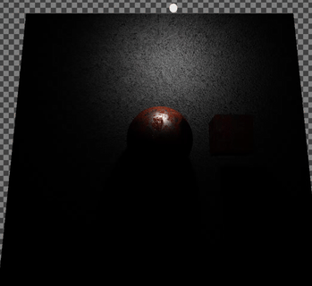 |
| 1024个光源 |
MSAA |
FXAA |
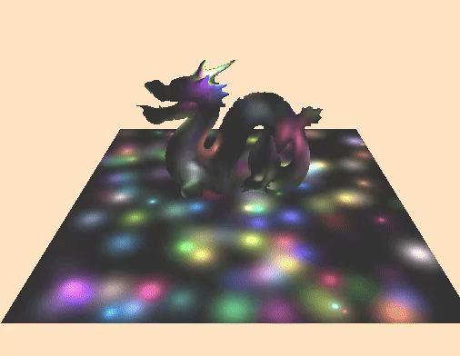 |
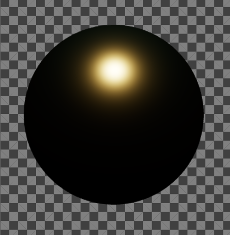 |
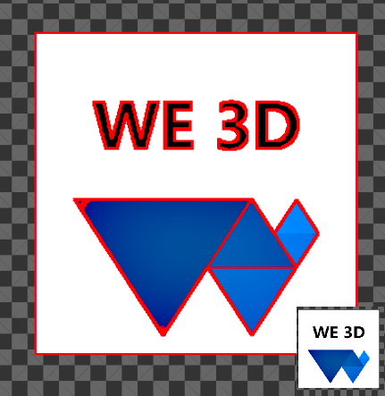 |
| post process blue 3*3 |
post process red to 1 |
延迟渲染 deferRender：PBR |
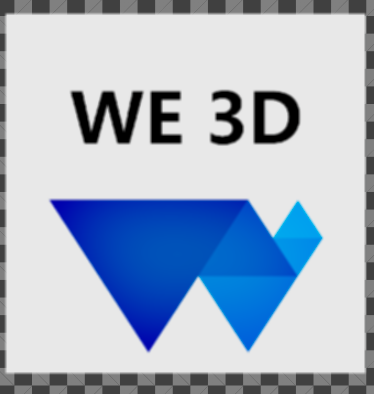 |
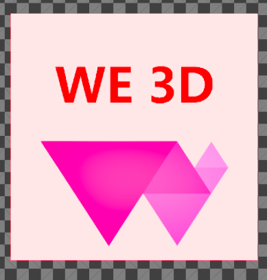 |
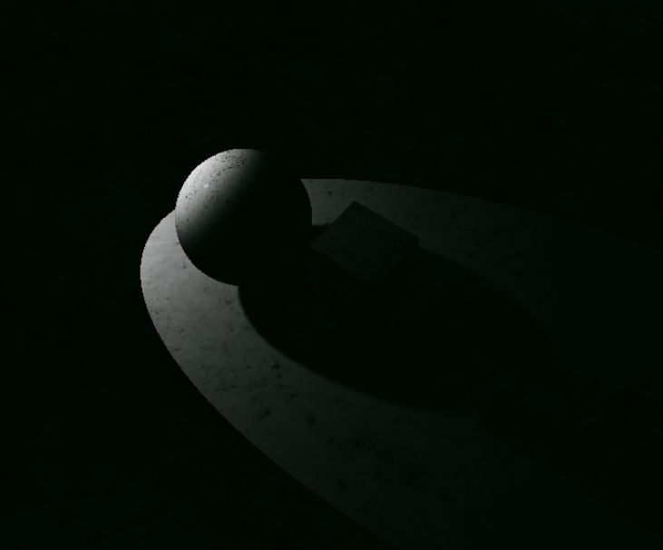 |
| 延迟渲染 deferRender：PBR |
延迟渲染 deferRebder：BlinnPhong |
延迟渲染 deferRebder：BlinnPhong |
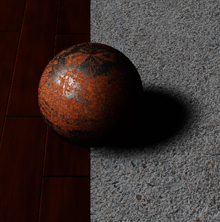 |
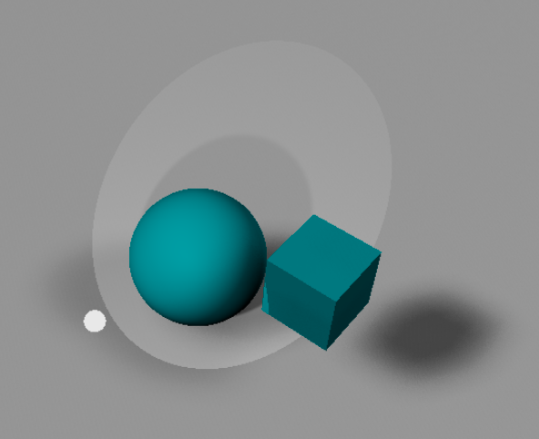 |
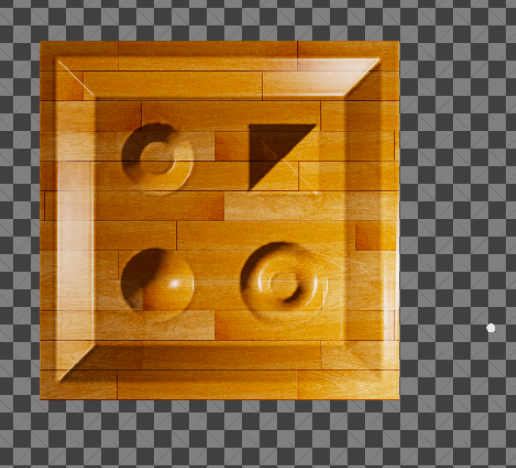 |
| 骨骼动画 skeleton |
变形目标 morph target |
gltf Fox 骨骼动画 |
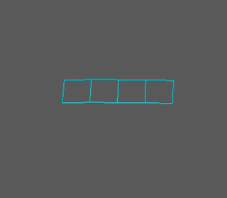 |
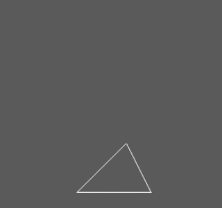 |
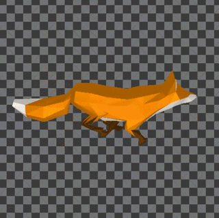 |
| gltf Hen 骨骼动画 |
gltf LittlestTokyo |
rapier demo with WE3D |
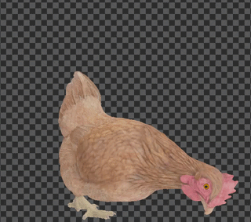 |
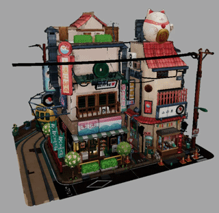 |
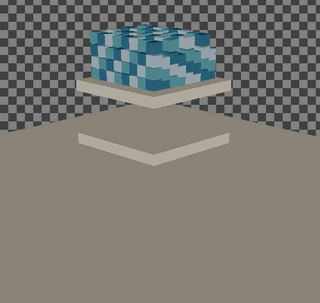 |
| PBR+IBL+SH |
PBR+IBL+SH+预览波+天空盒 |
体渲染 3D 纹理 |
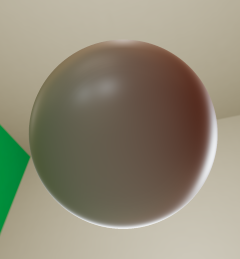 |
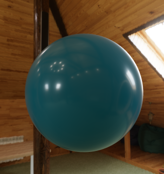 |
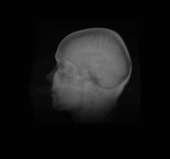 |
| 体渲染 ray march |
大气层 实时积分计算 |
大气层 Bruneton |
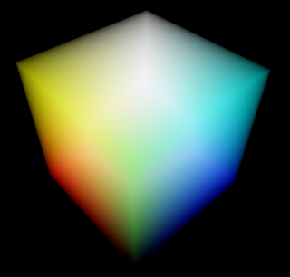 |
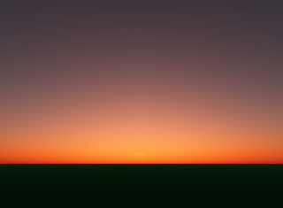 |
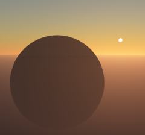 |
| 大气层 Hillaire LUT |
大气层 Hillaire ray march |
体积云 |
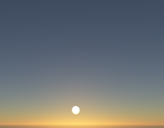 |
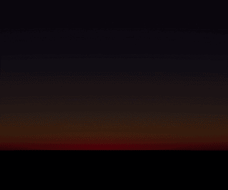 |
|
| 大气层+云 |
大气层+云+阴影 |
大气层+云+丁达尔+云阴影 |
|
|
|
| SSAO |
SSGI |
SSR |
|
|
|
| 仿真云图 |
仿真等值线体渲染 |
仿真流线 |
|
|
|
| clip 全局 |
clip 局部 |
clip sdf |
|
|
|
| 面积光 |
物理透明 |
A-Buffer |
|
|
|
| 粒子系统 |
流体系统 |
|
|
|
|
资料参考与推荐